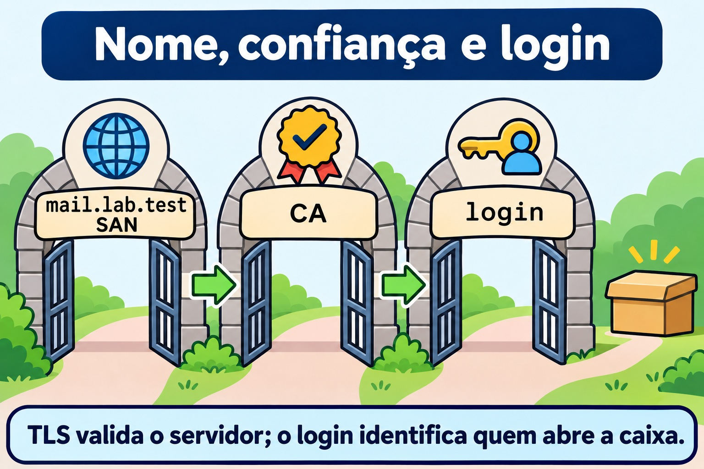
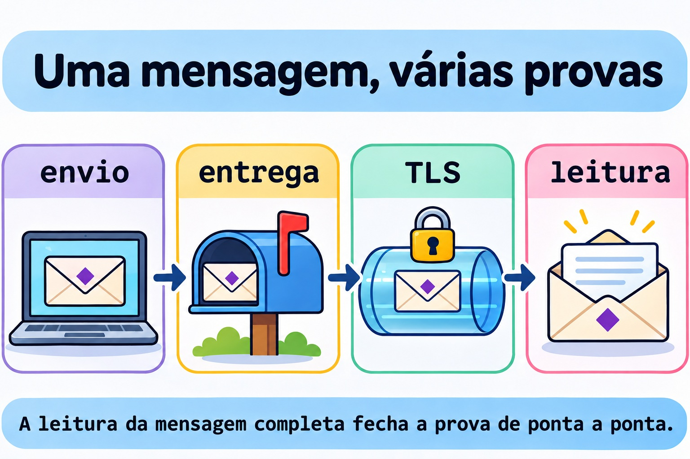

Aula 19.8 · Dovecot e leitura por IMAPS
O coração desta aula: a mesma mensagem só fecha a cadeia quando nome, confiança TLS, login e conteúdo são conferidos.
| Ficha | Plano de trabalho |
|---|---|
| Módulo | M19 · Serviços de rede, aula 8 de 9 |
| Quando | Semana 27 |
| Ao final | Ler por IMAPS a mensagem entregue pelo Postfix |
| Pré-requisitos | 19.5 e 19.7; CA do lab e conta aluno-mail |
| Duração | 100–140 minutos, além das instalações |
| Snapshot | m19a8-inicio e m19a8-fim, VM 204 |
Execute no convidado indicado, como student com sudo. O host Proxmox aparece somente no desafio explicitamente identificado. Não adapte os exemplos para um servidor de produção.
Confira o guia comum da bancada antes de mudar serviços; ele fixa rede, firewall e material de confiança.
Nomes canônicos do módulo: o nome da VM no Proxmox e o hostname do sistema operacional devem corresponder ao papel antes de executar as guardas. Um nome DNS de serviço não muda o hostname. Se o inventário divergir, reconcilie-o pelo console antes de seguir; não ignore as guardas.
| VM | Hostname curto | Endereço isolado |
|---|---|---|
| 201 | rocky-lab | 192.0.2.201 |
| 202 | debian-lab | 192.0.2.202 |
| 204 | srv-deb | 192.0.2.204 |
| 212 | m19-client | DHCP; somente desafio 19.9 |
1 · Aquecimento
- Quem deposita a mensagem na caixa: Postfix ou Dovecot?
- Uma conexão TLS válida prova que a senha está correta?
- Por que o nome usado pelo cliente precisa estar no SAN?
2 · Por que importa
Você encontra uma mensagem no disco, mas o cliente mostra uma caixa vazia. A mensagem pode estar em outra casa, noutro formato ou sob uma identidade diferente.
O Dovecot fornece acesso à caixa; ele não substitui a decisão de entrega já feita pelo Postfix. A prova atravessa ambos sem misturar suas responsabilidades.
O cliente deve confiar na CA privada do laboratório e conferir o nome. Desabilitar a verificação TLS transforma um sintoma de configuração em perda de identidade.
3 · Modelo mental

| Peça | O que prova |
|---|---|
| Postfix | Entrega a carta na caixa local |
| Maildir | Armazena cada mensagem num arquivo |
| Dovecot | Abre a caixa conforme a identidade |
| IMAPS | IMAP dentro de TLS desde a conexão |
| SAN | Autoriza o nome apresentado pelo cliente |
| CA | Estabelece a cadeia de confiança |
Ponte Windows
Num cliente gráfico, servidor de leitura, porta, segurança e usuário são campos distintos. Use o nome do certificado, IMAPS e a conta local; o endereço de correio do alias não é automaticamente o nome de login.
4 · O essencial
Esta aula exige Dovecot 2.4 no Debian 13. A configuração 2.3 usa nomes diferentes; não cole exemplos antigos de outra distribuição sem conferir a versão e a sintaxe.
O certificado vem da 19.5: mail.lab.test no SAN, CA em /etc/ssl/m19/ca.crt, certificado em /etc/ssl/m19/server.crt e chave em /etc/ssl/private/m19-server.key. A chave privada nunca vai ao cliente.
A única porta de leitura publicada é 993 no endereço isolado. A porta 143 fica desativada. O exemplo não habilita POP3, submission nem autenticação SMTP.
O mecanismo de autenticação pode chamar-se PLAIN e ainda estar protegido por TLS. O que esta bancada proíbe é transmitir a senha fora do túnel validado.
A senha será digitada em prompt interativo. Não a coloque numa URL, variável de ambiente, argumento de comando, captura de tela ou arquivo de evidência.
Rocky × Debian
No Debian 13, confira explicitamente a série 2.4. Ela usa mail_driver, mail_path, ssl_server_cert_file, ssl_server_key_file e auth_allow_cleartext.
Uma Rocky com Dovecot 2.3 precisa de uma configuração própria dessa série. A aula não muda a VM 201 nem tenta tornar a mesma configuração compatível com as duas versões.
5 · Lab guiado
A rede do laboratório é 192.0.2.0/24, isolada em vmbr17, sem gateway, NAT ou porta física. A VM 204 usa 192.0.2.204 nessa rede. A interface de gestão conserva seu endereço real e sua rota.
Passo 1 · Conferir caixa, certificado e versão pretendida
Palpite: Um arquivo de certificado existente prova nome e validade?
test "$(hostname -s)" = srv-deb || exit 1
test ! -L /etc/m19-lab.env || exit 1
test "$(stat -c %u:%g:%a /etc/m19-lab.env)" = 0:0:644 || exit 1
cat /etc/m19-lab.env
. /etc/m19-lab.env
test "$LAB_IP" = 192.0.2.204 || exit 1
ip -4 address show dev "$LAB_IF"
getent passwd aluno-mail
sudo find /home/aluno-mail/Maildir -maxdepth 2 -type f -printf '%P
'
sudo postconf home_mailbox
openssl x509 -in /etc/ssl/m19/server.crt -noout -dates -ext subjectAltName
openssl verify -CAfile /etc/ssl/m19/ca.crt -verify_hostname mail.lab.test /etc/ssl/m19/server.crt
sudo stat -c '%U %G %a %n' /etc/ssl/private/m19-server.key
sudo ss -ltnp '( sport = :143 or sport = :993 )'
apt-cache policy dovecot-core dovecot-imapd
systemctl list-unit-files 'dovecot*'Saída esperada: Uma mensagem do teste anterior, chave restrita a root, nome aceito e portas ainda livres. A versão candidata pertence à série exigida.
Verifique: Se a caixa não existe, volte à entrega local. Se o nome falha, corrija o certificado na 19.5; não omita a verificação do nome.
mkdir -p "$HOME/m19-lab"
EVID=$(mktemp -d "$HOME/m19-lab/evidence-19-8.XXXXXX") || exit 1
ip -4 route > "$EVID/routes-before.txt"
openssl x509 -in /etc/ssl/m19/server.crt -noout -fingerprint -sha256 > "$EVID/server-fingerprint.txt"Passo 2 · Preparar conta e pacote sem escuta automática
Palpite: A senha do alias precisa ser criada separadamente?
A conta foi criada na 19.7. Defina agora uma senha exclusiva para ela, digitada duas vezes no prompt. Não altere a conta de gestão. Se já houver Dovecot configurado, pare antes da instalação.
sudo passwd aluno-mail
sudo systemctl mask dovecot.service
sudo apt install dovecot-imapd
dovecot --version
case "$(dovecot --version)" in 2.4.*) ;; *) exit 1 ;; esac
systemctl is-enabled dovecot.service
sudo ss -ltnp '( sport = :143 or sport = :993 )'
sudo test ! -e /root/m19-backup-19-8 || exit 1
sudo install -d -m 0700 /root/m19-backup-19-8
sudo cp -a /etc/dovecot /root/m19-backup-19-8/dovecot
sudo cat /etc/pam.d/dovecot
sudo passwd -S aluno-mail
getent passwd aluno-mailSaída esperada: Senha definida sem aparecer na tela, unidade mascarada e versão 2.4 confirmada. A conta mantém a casa da entrega local.
Verifique: O arquivo PAM do pacote precisa existir e usar a autenticação local prevista. Não crie uma política PAM permissiva para resolver um login que ainda nem foi testado.
Passo 3 · Escrever uma configuração mínima da série 2.4
Palpite: Copiar os nomes de parâmetros da série 2.3 será aceito silenciosamente?
Este servidor ainda não possui configuração Dovecot de trabalho. Guarde o diretório original e substitua apenas o arquivo principal por um exemplo mínimo completo; ele não inclui os fragmentos antigos do pacote.
cat > "$EVID/dovecot.conf" <<'EOF'
dovecot_config_version = 2.4.0
dovecot_storage_version = 2.4.0
protocols {
imap = yes
}
listen = 127.0.0.1, 192.0.2.204
mail_driver = maildir
mail_path = ~/Maildir
first_valid_uid = 1000
auth_mechanisms = plain login
auth_allow_cleartext = no
ssl = required
ssl_min_protocol = TLSv1.2
ssl_server_cert_file = /etc/ssl/m19/server.crt
ssl_server_key_file = /etc/ssl/private/m19-server.key
passdb pam {
}
userdb passwd {
}
namespace inbox {
inbox = yes
}
service imap-login {
inet_listener imap {
port = 0
}
inet_listener imaps {
listen = 192.0.2.204
port = 993
ssl = yes
}
}
EOF
sudo doveconf -c "$EVID/dovecot.conf" -n > /dev/null || exit 1
sudo install -o root -g root -m 0644 "$EVID/dovecot.conf" /etc/dovecot/dovecot.conf
sudo doveconf -nSaída esperada: O parser aceita a sintaxe e mostra Maildir, TLS obrigatório, provedores locais e listener IMAPS isolado.
Verifique: Se qualquer validação falhar, não desmascare o serviço. Restaure o arquivo principal do backup e investigue a versão; não troque nomes de parâmetros por tentativa.
A conta local fornece UID, GID e casa. O exemplo não usa usuário virtual único nem define um dono global para todas as caixas.


Passo 4 · Iniciar e provar o túnel antes do login
Palpite: Uma porta aberta prova a identidade do servidor?
sudo doveconf -n > "$EVID/doveconf-final.txt" || exit 1
sudo systemctl unmask dovecot.service
sudo systemctl enable --now dovecot.service
sudo systemctl status dovecot.service --no-pager
sudo ss -ltnp '( sport = :143 or sport = :993 )'
sudo journalctl -u dovecot.service --since '-5 min' --no-pager
openssl s_client -connect 192.0.2.204:993 -servername mail.lab.test -verify_hostname mail.lab.test -verify_return_error -CAfile /etc/ssl/m19/ca.crt < /dev/nullSaída esperada: Somente 993 no endereço isolado, cadeia confiável e nome correto. O fechamento sem login é suficiente para esta prova TLS.
Verifique: Um banner IMAP não substitui o resultado da verificação. Não digite comandos de login em uma sessão TLS que apresentou erro.
Se o serviço não iniciar, recoloque a máscara antes de restaurar. Leia o erro do parser e o diário; a chave deve continuar restrita, sem permissão universal.
Passo 5 · Ler a mensagem sem expor a senha
Palpite: O usuário de login é o alias do destinatário?
Na VM 202, a CA pública foi transferida e conferida na 19.5 em /etc/ssl/m19/ca.crt. Não transfira a chave do servidor. Confira o suporte IMAPS do cliente antes de autenticar.
test "$(hostname -s)" = debian-lab || exit 1
dig @192.0.2.204 mail.lab.test A +short
curl --version
openssl s_client -connect mail.lab.test:993 -servername mail.lab.test -verify_hostname mail.lab.test -verify_return_error -CAfile /etc/ssl/m19/ca.crt < /dev/null
MID=$(cat "$HOME/m19-message-id.txt") || exit 1
printf '%s
' "$MID"
curl --cacert /etc/ssl/m19/ca.crt --user aluno-mail --url 'imaps://mail.lab.test/INBOX' --request "UID SEARCH HEADER Message-ID <$MID>"Saída esperada: O cliente pede a senha interativamente e retorna o UID real da mensagem procurada. O login usa aluno-mail, não o alias.
Verifique: Escolha o UID retornado pela busca, sem presumir que será 1. Uma caixa pode ter mensagens anteriores e números que não são consecutivos.
read -r -p 'UID observado: ' MAIL_UID
case "$MAIL_UID" in ''|*[!0-9]*) exit 1 ;; esac
curl --cacert /etc/ssl/m19/ca.crt --user aluno-mail --url "imaps://mail.lab.test/INBOX/;UID=$MAIL_UID"
# A senha e digitada no prompt, nunca acrescentada ao nome do usuario.Passo 6 · Fechar a correlação de ponta a ponta
Palpite: Um login bem-sucedido prova que a mensagem desejada foi lida?
Volte à VM 204, na sessão original que mantém a pasta de evidências. Compare o cabeçalho e o corpo lidos com a carta enviada. Maildir pode mover uma mensagem de nova para já vista durante a leitura.
test "$(hostname -s)" = srv-deb || exit 1
read -r -p 'Message-ID observado: ' MID
sudo journalctl --since '-30 min' --no-pager | grep -F "$MID"
sudo journalctl -u dovecot.service --since '-15 min' --no-pager
sudo grep -rlF -- "$MID" /home/aluno-mail/Maildir/new/ /home/aluno-mail/Maildir/cur/
sudo doveadm user aluno-mail
sudo postqueue -p
sudo ss -ltnp > "$EVID/listeners-final.txt"
ip -4 route > "$EVID/routes-after.txt"
diff -u "$EVID/routes-before.txt" "$EVID/routes-after.txt"Saída esperada: A carta aceita e entregue corresponde ao conteúdo recuperado pelo cliente, com sessão IMAPS registrada e rotas de gestão preservadas.
Verifique: O diário pode não registrar o cabeçalho no evento de leitura. Use o UID e o conteúdo no cliente para essa etapa e o marcador no Postfix para a entrega; não invente um log único que contenha tudo.
Decida 1 · O certificado não é confiável
A. Ignorar TLS para testar a senha. B. Trocar a senha imediatamente. C. Conferir CA, nome e validade antes de autenticar.
Decida 2 · O login funciona e a caixa está vazia
A. Conferir usuário, casa, formato e entrega. B. Reinstalar os dois serviços. C. Apagar os índices de todas as caixas.
6 · Quebre e conserte
Faça uma falha por vez e restaure antes da próxima. Mantenha a sessão de gestão aberta. Os defeitos abaixo não exigem apagar mensagens, usuários nem arquivos de outros serviços.
Quebra 1 · Nome errado no cliente
Sintoma: A conexão por IP falha na conferência de nome.
Investigação: Compare o nome solicitado com o SAN; não envie senha nessa conexão.
Causa: O certificado autoriza o nome DNS, não qualquer nome ou IP da máquina.
Conserto: Volte ao nome do SAN e confira sua resolução na rede isolada.
Prevenção: Registre nome e porta junto com a cadeia de confiança do cliente.
Verifique: A verificação do nome termina com sucesso antes de qualquer login.
openssl x509 -in /etc/ssl/m19/server.crt -noout -ext subjectAltName
dig @192.0.2.204 mail.lab.test A +shortQuebra 2 · Alias usado como login
Sintoma: A carta chega ao alias, mas o login com esse nome não autentica.
Investigação: Compare o mapa de aliases, a conta Unix e o usuário informado pelo cliente.
Causa: O alias do Postfix não cria uma conta autenticável no Dovecot.
Conserto: Use a conta local criada, com sua senha exclusiva. Não crie contas duplicadas para encobrir o erro.
Prevenção: Documente endereço de correio e nome de login em campos diferentes.
Verifique: O login da conta local abre a caixa que recebe o alias.
sudo postalias -q suporte hash:/etc/aliases
getent passwd aluno-mail
sudo doveadm user aluno-mailQuebra 3 · Formato de caixa divergente
Sintoma: O arquivo existe na casa, mas a caixa aberta não corresponde a ele.
Investigação: Confira caminho efetivo, casa e formato dos dois serviços.
Causa: Uma alteração de exercício fez o leitor procurar outro formato ou caminho.
Conserto: Restaure os dois parâmetros Maildir do passo 3, valide e recarregue. Não converta nem apague mensagens.
Prevenção: Mantenha um contrato único entre entrega e leitura.
Verifique: O conteúdo da mensagem original pode ser recuperado novamente pelo cliente.
sudo postconf home_mailbox
sudo doveconf -n mail_driver mail_path
sudo doveadm user aluno-mail
sudo doveconf -n && sudo systemctl reload dovecot.service7 · Armadilhas


- Certificado válido sem nome correspondente continua sendo erro de identidade.
- A senha do cliente não deve aparecer no histórico do shell.
- Não confunda UID IMAP, UID Unix e identificador de fila.
- A caixa pode mover mensagens entre novas e já vistas.
- Dovecot 2.4 não aceita automaticamente uma configuração 2.3.
- A chave do servidor permanece no servidor; somente a CA pública vai ao cliente.
8 · Quiz
- Que duas provas TLS são feitas antes da autenticação?
- Por que o alias não é automaticamente usuário IMAP?
- Qual formato os dois serviços precisam compartilhar nesta aula?
- Por que buscar pelo cabeçalho antes de escolher o UID?
- O que um login bem-sucedido ainda não prova?
9 · Folha de bolso
dovecot --version
sudo doveconf -n
sudo doveadm user aluno-mail
sudo ss -ltnp '( sport = :143 or sport = :993 )'
sudo journalctl -u dovecot.service --since '-15 min' --no-pager
openssl verify -CAfile /etc/ssl/m19/ca.crt -verify_hostname mail.lab.test /etc/ssl/m19/server.crtFlashcards: TLS → identidade do servidor e proteção do transporte.
Flashcards: Login → identidade que recebe acesso à caixa.
Flashcards: Leitura → conteúdo recuperado, correlacionado ao envio.
10 · Checklist e fechamento
- [ ] Série 2.4 e parser confirmados.
- [ ] Porta 143 fechada e 993 somente na rede isolada.
- [ ] CA, SAN e validade conferidos antes da senha.
- [ ] Conta local e Maildir correspondem à entrega.
- [ ] Senha digitada sem argumento nem URL.
- [ ] Mensagem original recuperada por UID observado.
- [ ] Evidências sem segredos e serviços preservados.
Reboot de conferência: agende somente a VM 204 quando a bancada permitir. Após o retorno, verifique endereço isolado, listeners, política e o teste funcional completo; um serviço ativo sozinho não fecha a prova.
Na janela combinada, reinicie pelo convidado; depois reconecte pela gestão e execute as verificações seguintes.
sudo systemctl rebootsudo systemctl is-active dovecot.service
sudo ss -ltnp '( sport = :143 or sport = :993 )'
sudo doveadm user aluno-mail
sudo postfix statusÚltimo exercício: Envie uma segunda carta com marcador novo e repita a leitura por busca, sem assumir um UID fixo.
11 · Na vida real
Antes de alterar um servidor existente, inventarie autenticação, casas, quotas, retenção, cópias e clientes. Uma migração de formato ou autenticação exige plano próprio e restauração ensaiada.
O usuário relata caixa vazia; a investigação começa pelo contrato efetivo e pela correlação, sem eliminar índices nem conceder leitura global das casas.
12 · Aprofunde quando quiser
Dovecot 2.4 · configuração inicial documenta a sintaxe e os provedores locais usados.
Dovecot 2.4 · TLS separa certificado, chave e exigência de transporte seguro.
curl · URLs IMAP explica busca e seleção de UID.
As referências sustentam a leitura documental. Os comandos e resultados desta aula precisam ser executados na sua bancada; esta entrega não registra testes em VMs.
!explica Diferencie entrega SMTP, autenticacao IMAP e leitura do conteudo.
!feynman Explique por que confiar na CA nao dispensa conferir o nome.
!quiz Proponha tres falhas de IMAPS e peca a primeira evidencia de cada uma.
Gabarito comentado
Aquecimento: Postfix entrega; TLS não prova senha; SAN vincula o nome à identidade do servidor.
Decida 1: C. Autenticar só depois de conferir a identidade evita entregar a senha a um destino não validado.
Decida 2: A. Login e localização da caixa são contratos distintos.
Quiz 1: cadeia até uma CA confiável e correspondência do nome ao SAN, além da validade temporal.
Quiz 2: aliases pertencem ao roteamento local do Postfix; PAM autentica contas locais.
Quiz 3: Maildir na casa da mesma conta.
Quiz 4: UID é atribuído à mensagem dentro da caixa e precisa ser observado.
Quiz 5: não prova a presença nem a leitura da mensagem desejada; ainda é preciso recuperar seu conteúdo.
Guarde as evidências fora da VM antes de encerrar. Preserve os serviços do M19 para as aulas seguintes e não reverta o snapshot sobre trabalho posterior.
← Aula 19.7 · Postfix · Índice das aulas · Aula 19.9 · Squid →